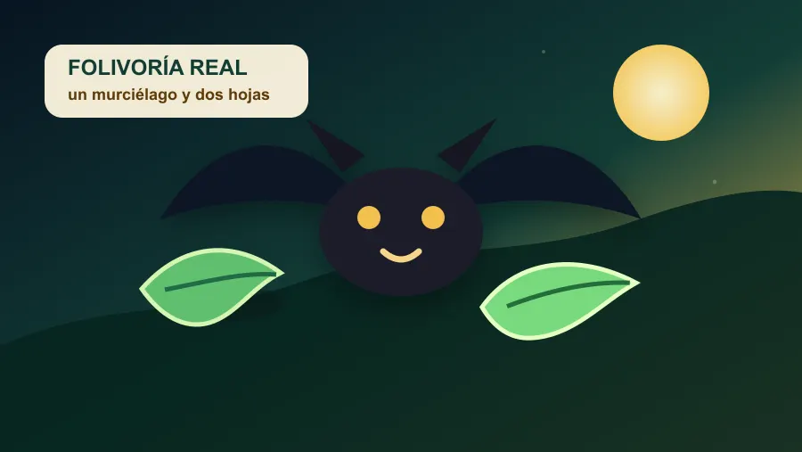

El murciélago que se zampó la ensalada entera
Un vídeo del Smithsonian documentó por primera vez a un murciélago comiendo hojas completas y digiriéndolas, no solo masticándolas y escupiéndolas.
Los murciélagos tropicales tienen fama de menú amplio: fruta, ranas, insectos y, en algunos casos, cosas que mejor no mirar antes de cenar. Pero investigadores del Smithsonian Tropical Research Institute grabaron en Panamá algo que se creía prácticamente descartado: un murciélago de cola corta de Seba, Carollia perspicillata, entrando al refugio con dos hojas y comiéndoselas enteras.
La diferencia es importante. Ya se sabía que algunos murciélagos mastican hojas y escupen la fibra, como quien hace una cata vegetal con poca educación. Aquí no: el animal tardó más de 13 minutos, se quedó unas tres horas y defecó diez veces, sin señales de vomitar ni expulsar las hojas por la boca. El porqué sigue abierto —nutrientes, proteínas o incluso automedicación—, pero la conclusión es jugosa: quizá el estómago de algunos murciélagos era menos delicadito de lo que pensábamos.
Fuente: Smithsonian Magazine / Smithsonian Tropical Research Institute — https://www.smithsonianmag.com/blogs/smithsonian-tropical-research-institute/2025/03/07/bat-salad-first-record-of-bats-eating-entire-leaves-and-not-spitting-them-out
Volver a la carta